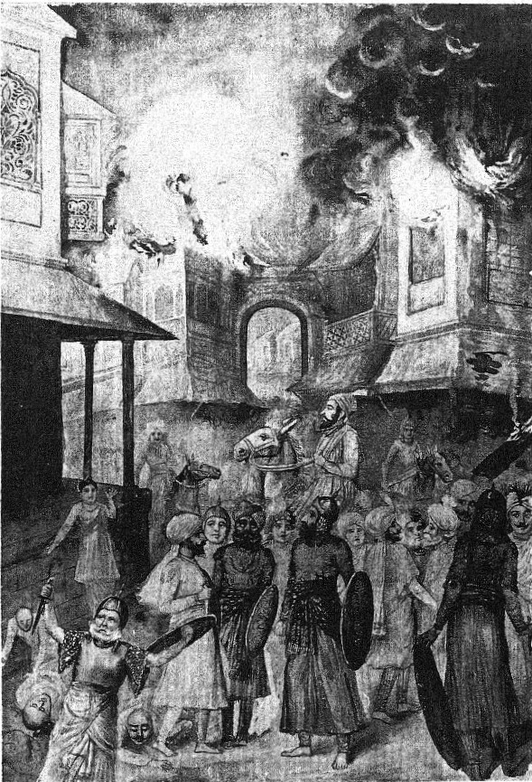
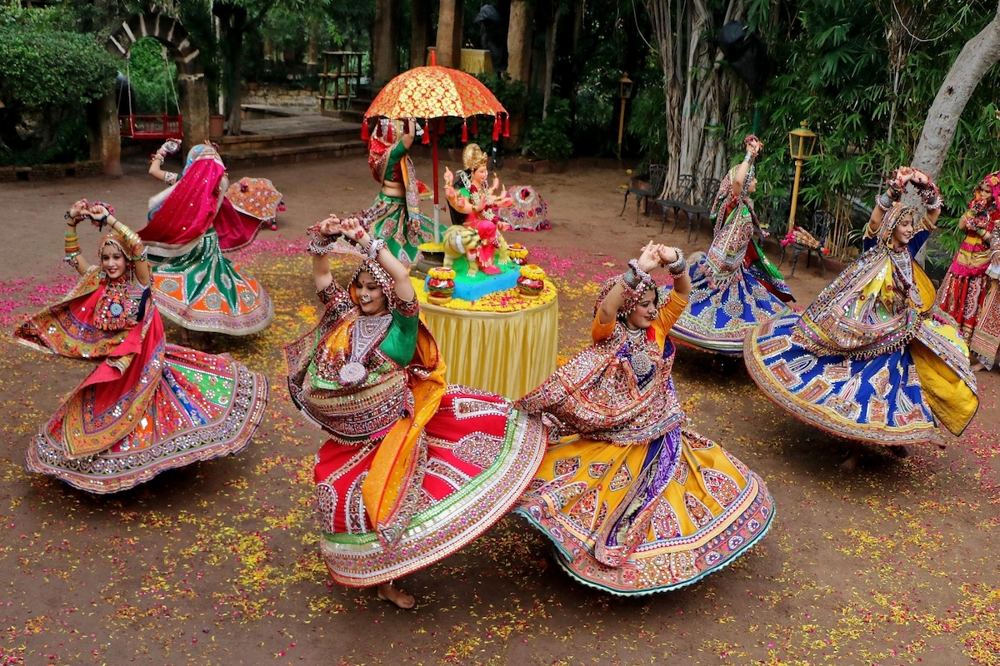

Gujarat: A Brief Historical Overview
Gujarat, located on India’s western coast, has a storied past shaped by dynamic empires, significant battles, and a vibrant cultural tapestry.
Key Dynasties and Empires:
Ancient Period:
- Maurya Dynasty (c. 322 BCE - 185 BCE):
- Gujarat was part of the Mauryan Empire under Ashoka, who promoted Buddhism and integrated the region into his vast empire.
- Saka and Kushan Empires (c. 1st CE - 4th CE):
- The region flourished through trade and cultural exchanges under these empires, enhancing Gujarat’s prominence.
- Chaulukya Dynasty (c. 6th CE - 12th CE):
- Raja Kumarapala: Known for his patronage of Jainism and significant architectural achievements, including the renowned Sun Temple at Modhera.
- Solanki Dynasty (c. 10th CE - 13th CE):
- Celebrated for their contributions to Hindu culture and architectural splendor, with monuments like the Rani ki Vav stepwell.
- Vijayanagara Empire (c. 14th CE - 17th CE):
- The empire’s influence extended into Gujarat, fostering prosperity and cultural development.
- Mughal Empire (c. 1526 CE - 1857 CE):
- Akbar: Annexed Gujarat, making it a key economic and administrative region within the Mughal Empire.
- Maratha Empire (c. 17th CE - 19th CE):
- The Marathas exerted significant influence over Gujarat, shaping its regional politics and economy.
- British Raj (c. 1820 CE - 1947 CE):
- Economic Hub: Gujarat emerged as a vital economic center under British rule, with cities like Bombay (now Mumbai) and Surat gaining prominence.
Key Battles

Key Battles
Battle of Dabhoi (1536 CE): A significant conflict between the Sultan of Gujarat and the Mughal Empire, reflecting the shifting regional power dynamics.
Battle of Surat (1664 CE): An important clash between the Marathas and the Mughal Empire, underscoring the strategic importance of Gujarat.

Cultural Significance
Monuments: Rani ki Vav, Gir National Park.
Festivals: Navratri, celebrated with vibrant Garba dances and a spirit of joyous devotion.
Gujarat's history is defined by its influential dynasties, crucial battles, and a rich cultural heritage, establishing it as a key region in India's historical and cultural narrative.